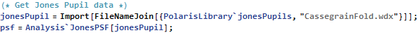
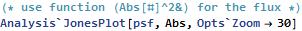
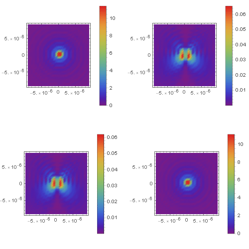
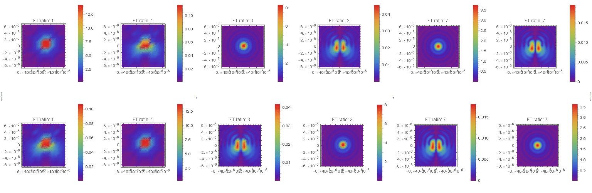

| ANALYSIS` SYMBOL |
JonesPSF
|
JonesPSF[jonesPupil_, opts___] Get the polarized point spread matrix for a Jones Pupil. The polarized point spread function is a 2 by 2 matrix function. Inputs: jonesPupil - {JonesMatrices,spacing, center,axes, λ} the Jones Pupil data structure. JonesMatrices - {n, m, 2, 2} dimensional array, where {n, m} is the diemensionality of the original ray grid spacing - average grid spacing of the JonesMatrices in [mm]. center - the center location of the Jones Pupil in global coordinates {x, y, z} in [mm]. axes - the direction of the wavefront normal at the center location. λ - the wavelength of the Jones Pupil in [μm]. Outputs: psfObject - {PSF, gridSpacing, rPSFCenter, opticAxis , λ} PSF - {n*ratio, m*ratio, 2, 2} dimensional array, where {n, m} is the diemensionality of the original ray grid, and ratio is the padding of the Jones Pupil spacing - average grid spacing of the PSF function in the PSF plane. center - the center location of the PSF function in global coordinates {x, y, z} in [mm]. axes - the direction of the wavefront normal at the center location. λ - the wavelength in [μm]. |
Custom Options
| Opts`FTRatio | 2 | A positive integer used to set the 0 padding of the pupil | |
| Opts`R | 20 [mm] | Distance from image plane to exit pupil. Used when calculating PSF spacing. | |
| Opts`PSFType | Amplitude | The units of the retured function “Amplitude” => units of electric field “Irradiance” => units of flux |
Basic Examples (1)
Use the ExampleText style to write cells like this one.

Now plot the polarized PSF function.



Options (1)
FTRatio (1)
This option will pad the Jones Pupil before calculating the PSF function. The more padding the more points will be in the returned psf grid.




•  •
•  •
•  •
•